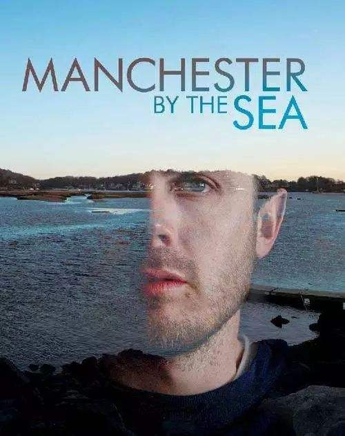

李在各个房子之间穿梭，修水管、通马桶、扫除门廊的积雪，有人觉得他可爱，有人嫌弃他笨拙，有人认为他粗鲁。他完成一项又一项无聊的工作，像个无头无脑的机器人，对一切似乎都抱有一种无所谓的态度。他孤独的走路，极少言语，魂不守舍，心不在焉，像个行尸走肉，经常在沉默不语和突然暴怒之间切换。人们只知道李是个落魄的维修工，没人在乎它的身世。或多或少，我们身边都会遇到这样的人，他们做着一份薪水低廉的重复性工作，不好不坏，毫无存在感，有些奇怪但终究无害。绝大多数时候，我们都没有兴趣了解他的过去和内心，通常觉得他们或许天生如此，也会一直如此。
《海边的曼彻斯特》把这样一个人做了一次回溯和剖白。这是个令人心碎的故事，它有关惩罚与自我放逐，讲述了无法自拔的痛楚与意外降临的救赎。李的哥哥去世了，他不得不回到故乡，处理一些事情。这个变故直接把李扔回了过去——故乡以及从前——他一直以来逃避的一切。这成为了一次很有趣的转折，让李的身份具备了背景。他开始显露身世，换句话说，塑造他性格和举止的原因开始被追溯。李原本有着正常而美好的家庭，孩子，妻子，一群一起喝酒打闹的朋友，家人，兄弟，还有和他亲近的侄子，但一场大火毁掉了一切，两个孩子未能幸免于难。最令他无法谅解自己的是，那场火灾是因为自己的一次疏忽造成的。妻子离他而去。他自己也拒绝了全世界。
对于灾难给一个人造成的创伤有很多种写法，《海边的曼彻斯特》采取了一种独特的方式，它把最煽情的部分小心翼翼地折叠、隐藏，近乎舍弃，不得已时才泄露一点点，它只交代了前因，再交代了后果，中途那些痛彻心扉的过程，在整部电影中都被故意省略和剔除了，这种故意留白的叙述方式正暗合着主人公自己的心境——他同样故意忘记那一段。但越是如此避而不提，人们越能自己脑补出那些难以描摹的痛苦。省略和留白成就了这部电影。它用克制的方式写出了原本就难以言传的绝望。
李的木讷是因为他故意封冻了情感，他得知哥哥的死讯时毫无心理波澜，看到哥哥的尸体也一样，和侄子相处，仍然无动于衷，他处于世界其中又一直超然世外，不是超脱，而是疏离，他放逐自己，把世界关在门外，觉得一切索然无味。时间是药物，有时，可以治愈一些什么，但有时会让人沉溺于药物本身。人们依赖时间洗刷掉所有记忆，但最终发现只是对逃避成瘾，想忘掉的一切却依然坚固。当你在时间的河流中逆流而动，逃避的一切都会轰然而至。
《海边的曼彻斯特》中设置的那场返乡之旅就是一场回游。它强迫着关闭世界的李重新与世界接壤，把流亡的自己镶嵌回那块老旧的版图上。那是一种折磨，也是一种治愈。某种程度上说，那像是一场没人知道结果的，突然降临的休克疗法，让李重回逃避的环境，见到不想见到人，要么崩溃，要么重生。这故事中在现实和过去之间交织。曾经，李和哥哥，还有自己的小侄子开船出海，一切都那么美妙。如今，所有事都已经更改。青春期的侄子，周旋于几个女友和自己少年心气的生活里，而他自己成为了遗嘱中的监护人。他想摆脱这个角色，但又不忍太过决绝。无意中，这成为了一种角色扮演和心理治疗。李重新开始部分扮演起父亲的角色，他是他中途而非的角色，而侄子开始重新拥有了变调的父爱。当然，李是在拒绝、恐慌之后，慢慢地试探与接纳。其实，最能治愈孤独和疏离的就是日常的琐碎，在很多绝望的时刻，人间烟火是救命的绳索。

这故事中在现实和过去之间交织。曾经，李和哥哥，还有自己的小侄子开船出海，一切都那么美妙。如今，所有事都已经更改。青春期的侄子，周旋于几个女友和自己少年心气的生活里，而他自己成为了遗嘱中的监护人。他想摆脱这个角色，但又不忍太过决绝。无意中，这成为了一种角色扮演和心理治疗。李重新开始部分扮演起父亲的角色，他是他中途而非的角色，而侄子开始重新拥有了变调的父爱。当然，李是在拒绝、恐慌之后，慢慢地试探与接纳。其实，最能治愈孤独和疏离的就是日常的琐碎，在很多绝望的时刻，人间烟火是救命的绳索。
有些伤痛确实很难彻底消弭，只能封存。即便李已经稳定了很多，当他的前妻和他在街头偶遇，两人提及过往，还没说什么，两人就都已经失控。但这次回乡之旅，开始融化了一些东西。李想办法处理遗嘱里的麻烦，想办法重新适应人际关系，他已经被自我钝化了，现在开始重新练习一种人类原本应该具备的交际反应。你看着他在躲闪游移和不知所措之后慢慢回魂，想卖掉那几支无用的猎枪，给侄子心心念念的船换一个新马达，看着他为了让侄子和女友有私密的一小时，他和女孩的母亲坐在客厅里努力聊天……最终，李选择了一种折中的方式面对未来，一种与熟悉的世界相切的距离，既不像以往那样远离也未能真正融入。这故事有着冰冷和灰霾，绝望和沮丧，它告诉人们这世上有些痛楚终究无法痊愈，但至少，他的生活中已经透进了些许光亮。